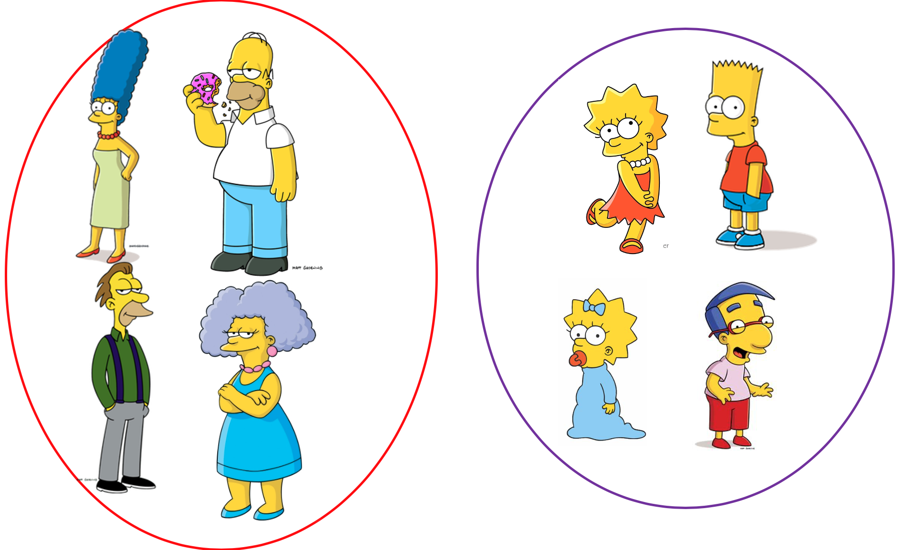
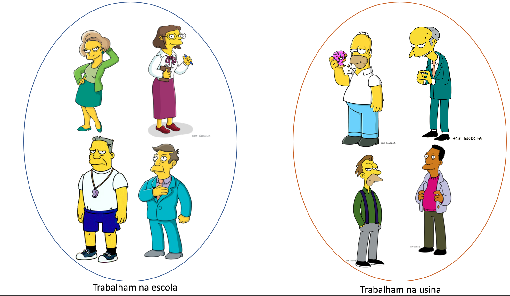
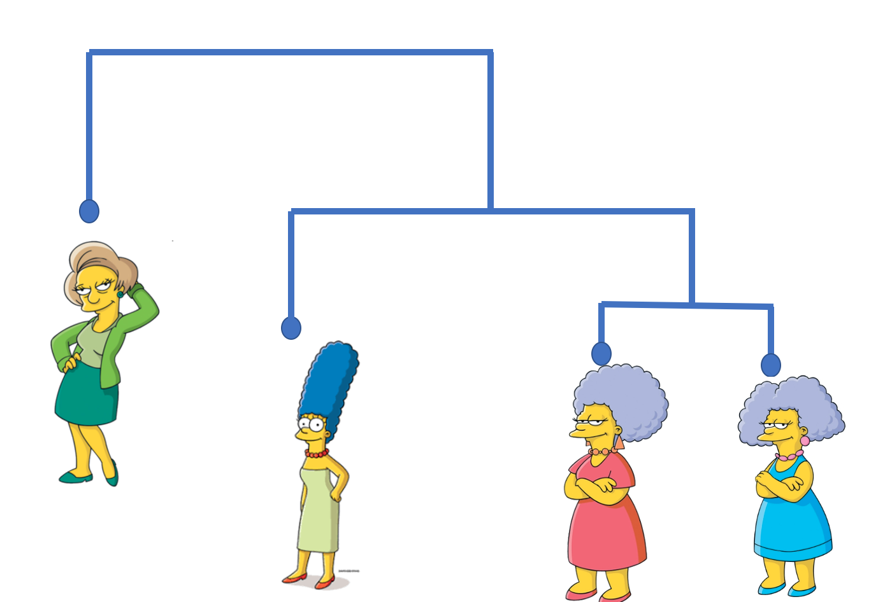
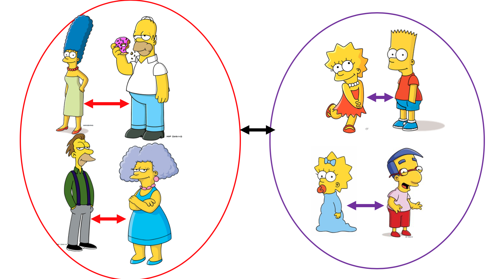
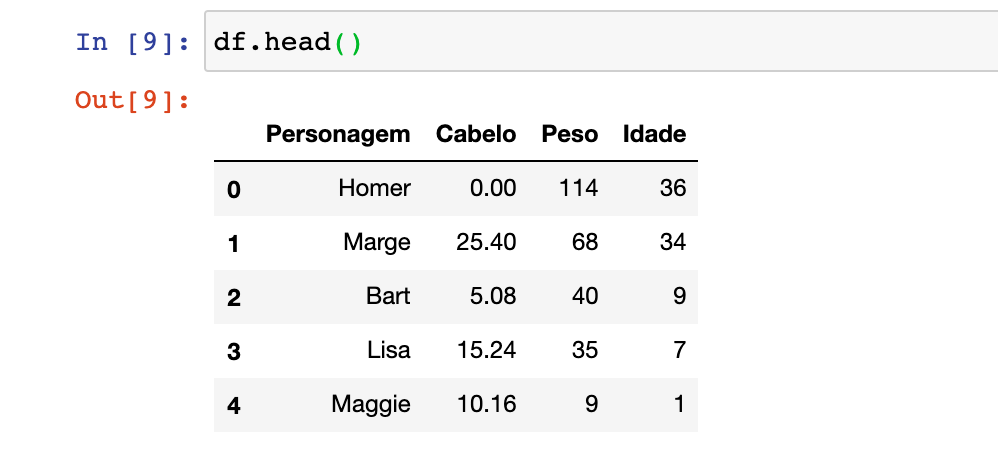
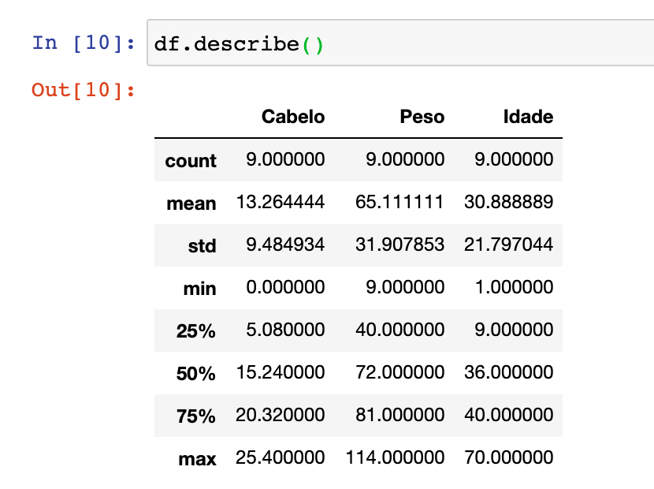
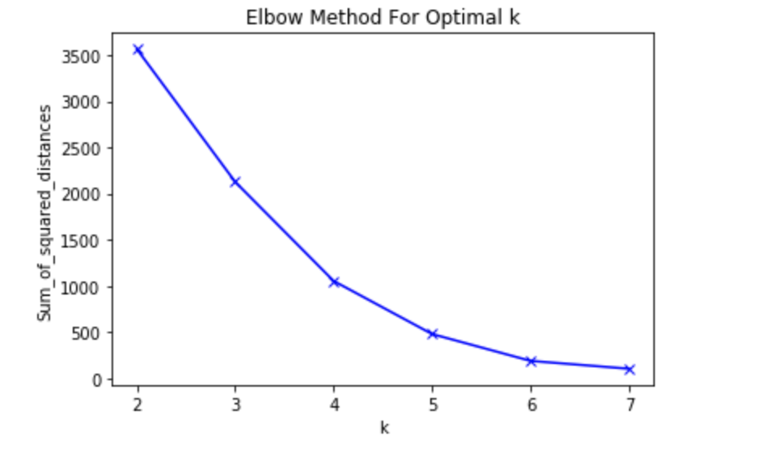
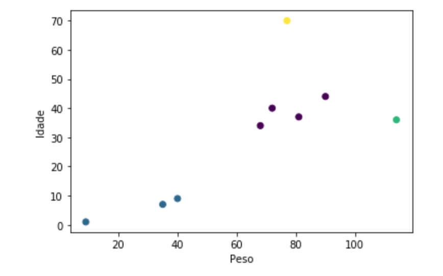

Aprendendo k-means com os simpsons
- Laura Damaceno de Almeida |
- Machine learning | k-means | Introdução |
- 23, Agosto de 2020 | 17 mins de leitura
Imagine-se na seguinte situação, o desenho dos simpsons tem milhares(ou seria centenas?) de personagens e você precisa vender donuts para esses personagens, parece simples né?! Mas e se eu te disser que cada um deles tem gostos diferentes, cada um deles gostam de coisas diferentes, e pode até ser que tenham alguns que não gostam de donuts. Aí fica complicado né?! A gente passaria muitos dias (ou meses!) tentando vendê-los, e isso não é muito produtivo.

Mas e se eu te disser que existe uma solução para esse problema, algo que possa facilitar as nossas vendas de donuts! Podemos usar um algoritmo para segmentar, ou seja, criar grupos diferentes de personagens baseados em suas características, então teríamos um grupo de personagens que não gostam de donuts, grupos de personagens são muito fãns de Dounuts, personagens crianças (que podem gostar de Dounuts de chocolate), etc… Por fim, podemos ter vários clusters ou grupos possíveis.
Então que tal entendermos como funciona um dos algoritmos que pode nos ajudar a resolver esse e muitos outros problemas?

Antes de mais nada precisamos ter em mente o que é machine learning ou aprendizado de máquina, que é uma subárea da Inteligência Artificial, em que os algoritmos recebem a habilidade de aprender com os dados sem serem explicitamente programados. O aprendizado nada mais é do que encontrar padrões nos dados a partir de uma experiência, e com essa experiência o modelo vai conseguir prever, classificar ou agrupar novos dados de acordo com o objetivo dele.
Esse aprendizado é dividido em 3 grandes áreas: Supervisionado, não supervisionado, por reforço. Nesse post eu só vou explicar o aprendizado não supervisionado, pois é o foco do artigo ;). Mas caso você queira saber mais sobre os outros aprendizados, pode acessar o meu artigo pra Sprint do Programaria e para o AI Girls.
No aprendizado não supervisionado a máquina precisa aprender por si mesma os padrões e tendências existentes nos dados, diferente do supervisionado não temos a variável alvo. Por exemplo, queremos explorar o dataset com alguns personagens dos simpsons e com isso rodamos um algoritmo não supervisionado para entendê-los melhor. E o algoritmo nos retornou a saída abaixo com os clusters que ele formou, o que vocês vêem de semelhante entre os personagens dentro do clusters?
Se você olhar bem, o modelo separou os personagens pela idade (UAAAAL!!), ou seja, personagens com idades baixas formaram um grupo de pessoas mais novos, e já personagens com idades altas formam um grupo de pessoas mais velhas, portanto clusters nada mais é que grupos. Bem bacana né?!
Normalmente o aprendizado não supervisionado é utilizado nos seguintes problemas:
- Agrupamento ou clusterização:quando queremos agrupar os dados, de acordo com suas características ou descobrir grupos nos nossos dados, por exemplo agrupar os personagens pela idade (spoiler: Iremos focar neste grupo no artigo). Então cluster nada mais é que um grupo de objetos (personagens, pontos, clientes, etc..) similares.
- Associação:quando queremos descobrir regras que descrevem os nossos dados, por exemplo as pessoas que gostam do livro A, tendem a comprar o livro B.
Como o nosso objetivo é encontrar grupos dentro do desenho dos Simpsons, iremos utilizar algoritmos de clusterização.
Mas quais as vantagens de usar clusterização?
- Analise exploratória nos dados
- Geração de resumo dos dados
- Detecção de outliers
- Encontrar duplicações nos dados
E quais os diferentes tipos de algoritmos de clusterização?

Clusterização baseada em partição:
Constroem várias partições e depois é avaliado através de algum critério, por exemplo: “Faz sentido os clusters formados?”.
Exemplo: K-Means, K-Median, Fuzzy c-means
Clusterização hierárquica:
Cria uma hierarquia decompondo uma série de objetos usando algum critério.
Exemplo: Aglomerativo, Divisivo
Mas infelizmente (ou felizmente), hoje aprenderemos apenas o K-means!
K-means também conhecido como Isodata ou C- Means, é o algoritmo mais conhecido e utilizado para o agrupamento de dados e apoio a outros algoritmos que possuem alto custo computacional, é o algoritmo de agrupamento mais popular e utilizado devido à sua simplicidade, eficiência e facilidade de implementação. E ele recebeu esse nome pois ele particiona os dados e K grupos diferentes (OAAAAL),então se você passar pra ele o valor de K=3, o algoritmo irá formar 3 grupos (já já eu explico o significado do “means”).
Para fazer os grupos ele precisa encontrar personagens semelhantes, mas como podemos medir o quão semelhante dois personagens são? Como trazer isso para a matemática?
Através de cálculos de distância entre os personagens, onde os personagens mais similares estarão mais próximos, ou seja, quanto menor a distância mais similares são, quanto maior a distância entre um personagem e outro, maior são suas diferenças. Em outras palavras, a distância entre os dados (personagens) é usada para moldar os clusters ou grupos.
Então podemos dizer que o K-Means tenta minimizar a distância intra-clusters (diminuir a distância entre os personagens dentro de um grupo) e maximizam a distância inter-clusters (precisamos aumentar a distância entre grupos diferentes).
Nessa imagem vocês podem ver que a distância entre os clusters é exibido pela seta preta, e a distância intra-clusters é representado pelas setas dentro de cada um dos clusters.
Há alguns cálculos muito populares para calcular a distância entre os dados, entre eles temos:
Para dados binários:- Distância de Hamming
- Distância de Matching
- Distância euclidiana
- Correlação de Pearson
- Medida de cosseno (muito utilizado em textos)
Como o K-Means funciona?
Vamos explorar como ele funciona por baixo dos panos?

1- Primeiro, precisamos definir um ‘K’, ou seja, um número de clusters (ou agrupamentos) que o algoritmo precisa fazer.
2- Depois, é definido aleatoriamente, um centróide, ou seja, um ponto de referência para cada cluster (isso o algoritmo realiza sozinho).
3- Agora é encontrar a centróide mais próximo de cada ponto de dados, todos os pontos que estiverem mais próximos da centróide são atribuidos ao grupo. Podemos dizer que isso não resulta em bons clusters, pois os centróides foram dadas aleatórios, a princípio.
4- Agora, a questão é: “Como podemos deixar os nossos clusters mais perfeitos?”. Nós podemos mover os centróides. Na próxima etapa, cada centro de cluster ser atualizado para ser a média dos pontos de dados em seu cluster, é daí que vem o “means” do K-means (“means” para quem não sabe significa “média” em português).
5- Precisamo calcular a distância dos pontos tudo de novo, portanto as etapas 3 e 4 são repetidas até o momento em que os centróides não mudam, aí significa que obtemos a posição ideal dos centróides.
Bem simples né?!
Mas atenção!!

O k-means (assim como muitos outros algoritmos de machine learning) é uma heurística, e com isso não temos garantia que convergirá para um resultado ótimo, e o resultado pode depender dos clusters iniciais. Isso significa que este algoritmo é garantido para convergir a um resultado, mas o resultado pode ser um ótimo local (ou seja, não necessariamente o melhor possível resultado). Para resolver este problema, é comum executar todo o processo, várias vezes, com diferentes condições iniciais.
E como saber se ele acertou? Como avaliar o que foi gerado?
Uma das opções é compararmos os resultados gerados com os verdadeiros resultados, se tiver disponível. Normalmente não temos esses resultados verdadeiros, então tem uma outra opção, é com base no objetivo do k-means, ou seja, vamos considerar a distância dos pontos dentro de um cluster, por exemplo: pode ser usado a análise por Silhouette, que mede o quão bem um ponto se encaixa em um cluster (se você se interessou sobre essa técnica tem um artigo bem bacana que ensina como que aplica ela, clicando aqui), além disso a média entre as distâncias pode ser usada como uma métrica de erro para o algoritmo.
O grande desafio de escolher um valor para o K:

Essencialmente escolher o número de clusters em um dataset é um problema muito frenquente, pois o valor correto de K é ambiguo porque depende muito da forma e da escala de distribuição de pontos em um dataset. Existe algumas abordagens para lidar com isso, mas uma das técnicas mais usadas é executar o clustering em diferentes valores de K e olhando para a métrica de precisão dele, essa métrica pode ser “a distância média entre os pontos de dados e seu centróide do cluster”, que indique quão densos são nossos clusters ou até que ponto minimizamos o erro de clustering.
Outra forma é usarmos o “Método do cotovelo”, que utiliza a distância média entre os pontos e centróide dentro do cluster e nos ajuda a definir a melhor quantidade de clusters que podem ser encontrados, mesmo sem saber a reposta antecipadamente, tem um artigo sensacional do pizza de dados sobre isso, para acessar clique aqui.
Bora pra prática?!!

Pessoal, como uma boa pythonlover eu mostrarei a implementação do algoritmo através da biblioteca do python chamada Scikit-learn e irei utilizar também um CSV que eu criei com algumas informações fictícias de alguns personagens do simpsons, para acessa-lo clique aqui. E logo abaixo temos a tabela com os personagens e as informações que vamos utilizar.
Antes de mais nada, é necessário ler os dados, portanto utilizaremos a biblioteca Pandas para isso.
import pandas as pd
df = pd.read_csv('data/simpsons.csv',sep=";")
df.head()
Então nesse código, lemos o arquivo CSV cujo nome é “simpsons” e atribuimos os valores que estão neles em uma variável chamada “df”, que virou um objeto tabular do tipo DataFrame que é exclusivo do Pandas. E com isso estamos pedindo para exibir as 5 primeiras linhas da nossa tabela com a função .head(), que por default exibe 5 linhas (se você quiser visualizar mais linhas, você passar por parâmetro a quantidade que você quer).
Se você rodar esse código, terá a seguinte saída:
Se você quiser entender mais sobre os dados, você pode utilizar a função . describe() do pandas, que tem um resumo estatístico (mostra a média, valor máximo e minimo, desvio padrão e os quartis dos dados). Vou falar bem por cima o que esse resumo nos passou.
Como vocês podem ver, no index de “count” ele mostra a quantidade de amostra que temos em cada uma das colunas, no nosso caso ele está mostrando que temos 9 personagens, portanto temos 9 informações sobre o cabelo, o peso e a idade. Já o “mean” indica o valor médio de cada uma das colunas (importante ressaltar que essa medida de resumo é muito sensível a outliers, ou seja valores atípicos.)
from sklearn.cluster import KMeans
kmeans=KMeans(n_clusters=3)
kmeans.fit(df.drop('Personagem',axis=1))
No código acima importamos o algoritmo, e instânciamos e atribuimos a uma variável chamada “kmeans”. Ah! E definimos a quantidade de cluster como 3, e treinamos o modelo com o método .fit(), precisamos passar os dados dentro dos parênteses, no meu caso eu deletei a coluna com o nome dos personagens ao passar por parâmetro.
E esses foram os clusters gerados pelo algoritmo:

Podemos notar que temos um cluster com os personagens mais novos, e tem um grupo de personagens mais velhos, entratanto podemos ver que o Homer ficou sozinho lá na ponta, pode ser pois ele é o único personagem que tem pouco cabelo. Mas será que a quantidade de clusters, estão corretos? Vamos utilizar o método do cotovelo para validar =).
Conforme disse a maravilhosa Jessica Temporal no seu artigo sobre “Como definir o número de clusters para o seu K-means” (você pode acessar clicando aqui.) “o KMeans calcula a distância das observações até o centro do agrupamento que ela pertence, o ideal é que essa distância seja a menor viável. [..] nós estamos buscando uma quantidade de agrupamentos em que a soma dos quadrados intra-clusters seja a menor possível.”, e isso o scikit-learn já calcula pra gente e ele dá o nome de “inertia”.
df_final = df.drop('Personagem',axis=1)
Sum_of_squared_distances = []
K = range(2,8)
for k in K:
km = KMeans(n_clusters=k)
km = km.fit(df_final)
Sum_of_squared_distances.append(km.inertia_)
Para isso eu criei um vetor chamado “Sum_of_squared_distances” que vai armazenar o valor da “inertia” em cada um dos experimentos. Como nós temos 9 personagens, vamos testar o desempenho do K-means com quantidade de clusters de 2 a 7, e com isso treinamos o modelo com os mesmos dados anteriores e adicionamos no vetor. Agora que temos o vetor, que tá plotarmos para facilitar a nossa análise?!
plt.plot(K, Sum_of_squared_distances, 'bx-')
plt.xlabel('k')
plt.ylabel('Sum_of_squared_distances')
plt.title('Elbow Method For Optimal k')
plt.show()
Eu fiz um plot beem simples, utilizando a biblioteca Matplotlib do python, onde passamos por parâmetro no método .plot() o valor do eixo X e Y, e a forma como queremos que apareça os dados. Ao usar a função .xlabel() e .ylabel() estamos colocando nome nos eixos do gráfico gerado.
E nele conseguimos ver mais ou menos que o melhor valor pros clusters é 4, então que tal treinarmos o modelo de novo e plotarmos para ver o resultado?
kmeans_2=KMeans(n_clusters=4)
kmeans_2.fit(df_final)
df['cluster_'] = kmeans_2.labels_
#plotando os clusters gerados
plt.xlabel('Peso')
plt.ylabel('Idade')
plt.scatter(df['Peso'], df['Idade'], c=df['cluster_'])
E no final temos a seguinte saída:
Agora está mais visível os diferentes grupos nos nossos dados, e podemos observar que temos 2 outliers (representados pelo: Abbe e pelo Homer).
Ufaa!! Muita coisa né?!Mas eu espero que vocês tenham gostado, tentei trazer os aspectos básicos do k-means e os pontos de atenção que precisamos ter com o modelo. Você pode acessar os códigos utilizados, clicando aqui. Qualquer dúvida ou feedback podem me chamar no Linkedin ou no Instagram.
Share love

Sobre a autora
Pyladie de coração e cientista de dados na IBM, apaixonada por IA e ciência de dados. Acredita que ambas tecnologias podem causar um impacto positivo na sociedade.
Veja mais